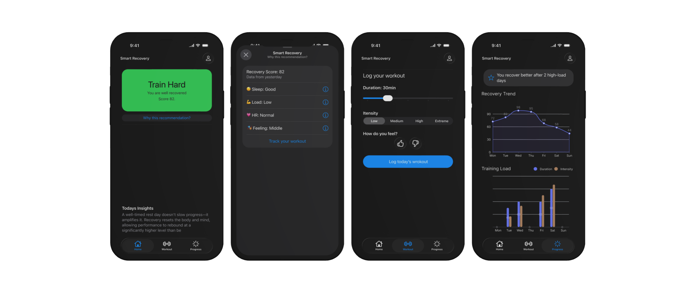

Low-Fi Design
Visual Design
Human Interface Guidelines
Improve your training with data-driven recovery insights.
Smart Recovery is a mobile application that provides athletes with personalized recovery insights based on their training data, helping them optimize performance and prevent injuries.
View Case Study →